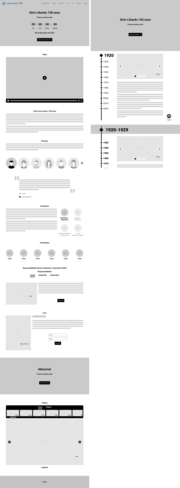

Processo
A maneira como o conteúdo foi estruturado visa contar uma história, apresentando informações, curiosidades, reforçando os valores e as pessoas que contribuem para que o Hospital Sírio-Libanês seja uma grande referência para a sociedade. A estrutura criada serve para cativar o usuário a continuar durante a sua jornada, despertando sua curiosidade e interesse para descobrir mais sobre a história do HSL.
Na 1ª dobra do site foi colocado uma frase de efeito, um contador até a data comemorativa e um botão direcionando para a linha do tempo que ficaria em outra página. Dando destaque a linha do tempo, por ser uma experiência imersiva, interativa e dinâmica, apresentando os principais marcos e curiosidades.
Logo abaixo o vídeo manifesto e o texto servem como uma introdução para o conteúdo restante do site, introduzindo o usuário em sua jornada.
A próxima seção começa apresentando as pessoas que fazem parte da história e seus relatos. Pessoas que ajudaram a construir os valores e qualidades que hoje tornam o HSL uma referência na área da saúde, garantindo sua excelência, reconhecida pelos certificados conquistados ao longo dos anos. Além disso, são apresentados os projetos que envolvem a responsabilidade ambiental, social e corporativa (ESG).
Nas próximas seções um tour virtual e um ebook complementam com mais informações além do que já foi apresentado anteriormente. Para finalizar a jornada, uma galeria com fotos e vídeos que servem para consolidar tudo o que foi apresentado anteriormente e também exibir novos conteúdos.
Além da proposta apresentada, foram mostrados sites comemorativos que possuem uma boa experiência do usuário como referência.
Proposta final
A tela da esquerda mostra a página inicial. A tela superior da direita mostra a linha do tempo contando um pouco mais sobre a história do hospital e seus principais marcos.
Já na tela da direita inferior, mostra como funcionaria depois que o usuário rolasse a página para baixo para ver o conteúdo. Uma barra destacando a data ficaria fixa no canto superior da tela.
